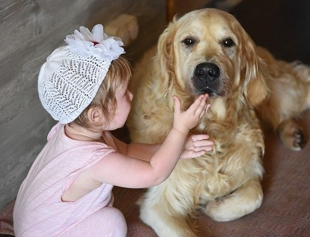

Shreya Sitting Services
Learn about our history and trust our present. We're here for you!

About Shreya Sitting Services
At Shreya, we take pride in our exceptional customer service. We began our business with one employee- Shreya Halder, owner and founder. Since her first love affair with her golden retriverm, Bellam Shreya has been a true animal lover. As a young adult, she turned that caring spirit into a successful after-school pet-sitting business. And, she never stopped!
Halder's repoutation for trustworthy and caring service has grown over the years, as has the company. In 2015, Steller added house sitting services to their menu and now employs over 300 sitters. Each and every one of our sitters has completed extensive security checks, along with intensive training on at care, home care, amd security/emergency procedures. You can trust a Shreya sitter!
Halder invites you to become a member of teh happy family of satisfied Shreya Sitting Services customers.